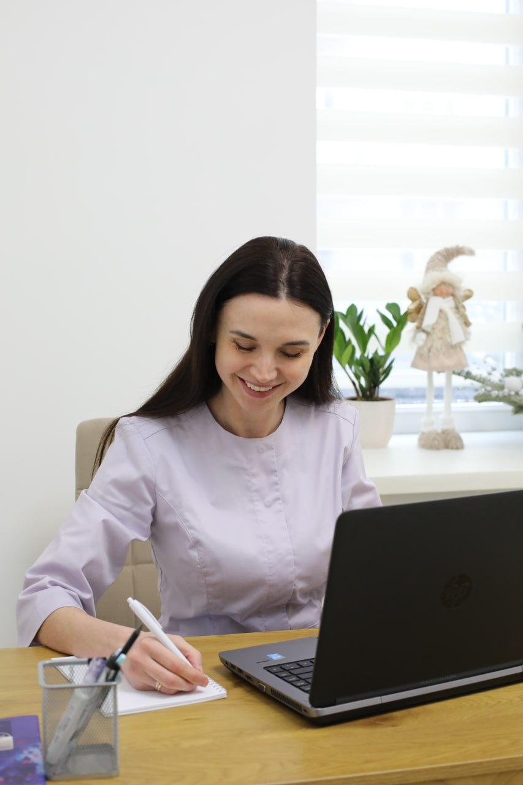

Експертна діагностика новоутворень шкіри, лікування хронічних дерматозів та акне на засадах доказової медицини. Безпечне видалення бородавок і папілом.
Дерматологія в нашій клініці базується виключно на протоколах доказової медицини. Шкіра — це найбільший орган людини, який миттєво реагує на внутрішні збої та зовнішні чинники. Наша мета — знайти справжню причину захворювання, а не просто ліквідувати його зовнішні прояви.
Ми проводимо високоточну цифрову діагностику родимок, терапію складних форм акне та розацеа, а також підбираємо системне лікування за індивідуальними схемами контролю.

| Послуга | Ціна |
|---|---|
| Консультація дерматолога первинна | 800 грн |
| Консультація дерматолога вторинна | 600 грн |
| Дерматоскопія (дослідження родимок та утворень) | 600 грн |
| Трихоскопія (комп'ютерна діагностика волосся та шкіри голови) | 600 грн |
| Призначення ретиноїдів + 5 контрольних оглядів (одноразова оплата курсу) | 3 000 грн |
| Кількість елементів у пакетах | Ціна |
|---|---|
| Видалення утворень від 1 до 5 шт. | 600 грн |
| Видалення утворень від 6 до 10 шт. | 900 грн |
| Видалення утворень від 11 до 20 шт. | 1 600 грн |
| Видалення утворень від 21 до 30 шт. | 2 000 грн |
| Видалення утворень від 31 до 40 шт. | 3 000 грн |
| Видалення утворень від 41 до 50 шт. | 4 000 грн |
| Видалення утворень від 51 до 60 шт. | 5 000 грн |
| Тип новоутворення | Ціна |
|---|---|
| Видалення кондилом (1 шт.) | 300 грн |
| Видалення міліума (1 шт.) | 150 грн |
| Плоскі бородавки (видалення за 1 зону) | 700 грн |
| Проста бородавка (1 шт.) | 600 грн |
| Прості бородавки (малі) (пакет 3 шт.) | 600 грн |
| Підошвенні бородавки (1 шт.) | 500 грн |
На первинному прийомі лікар збирає детальний анамнез, проводить ретельний візуальний огляд шкірного покриву, за потреби виконує експрес-дерматоскопію утворень, встановлює попередній або заключний діагноз і розписує покроковий план лікування та домашнього догляду.
Ні, заздалегідь здавати лабораторні аналізи не потрібно. Без огляду лікаря ви можете витратити кошти на непотрібні дослідження. Дерматолог визначить точний перелік маркерів лише після встановлення клінічної картини під час консультації.
Після процедури на місці утворення з'являється захисна кірочка. Її категорично не можна здирати або розпарювати. Протягом перших 3-5 днів ділянку обробляють спеціальним антисептичним розчином, який призначить лікар, та мінімізують прямий контакт із водою.
Запишіться на цифрову дерматоскопію родимок або отримайте розгорнуту схему лікування хронічних висипань від дипломованого лікаря-дерматолога.
Записатись на прийом